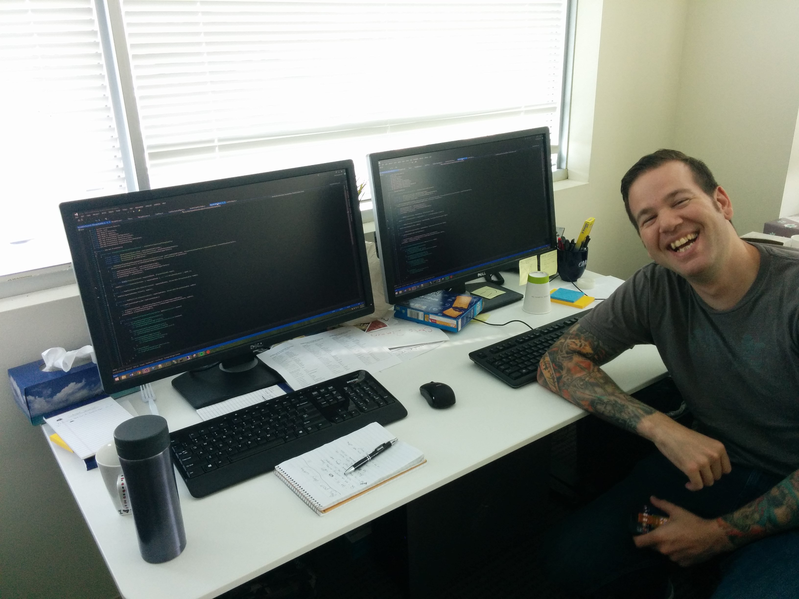

My Thoughts and Experiences on Pair Programming
At the time of writing this blog, I have about 3.5 years of experience as a professional software developer. For the majority of my career, I have worked in places that have done pair programming, or pairing. Overall, I have had positive experiences with pairing. I wish to speak about my experiences with pair programming, explaining some of the benefits and difficulties that come with the practice.
What is pair programming?
Pair programming, or pairing, is when two developers actively work together on writing a piece of software at the same time. Pairing can be done with two developers sitting at the same workstation, or it can be done remotely. Pair programming yields a number of great benefits, including real-time code reviews and increased knowledge transfer.
Pair switching
When developers pair program, the same developers don’t stay together all the time. Unless the team consists of two developers. By switching pairs, developers work with other developers on the team and get exposed to other work. My experience with pair switching has been the following.
Devs A and B have been working on task 1 and devs C and D have been working on task 2. The pairs will work on their respective tasks for a given period of time that is agreed upon by the team. I have paired with people for a whole day, for a half day, or for two hours. After the period of time, the pairs will switch up. Devs A and C will work on task 1 and devs B and D will work on task 2. Dev A brings Dev C up to task on the work that has been done by A and B. Dev D will bring Dev B up to speed on what has been done by devs C and D for task 2.
The devs will work for that same period of time again. The developer who just came onto the task will stay on while the other person switches off. Because Dev A was on task 1 longer than Dev C, Dev A will switch off and Dev C will bring Dev D up to speed on task 1.
This is just an example of how to pair switch. Sometimes the same people will end up pairing together often or certain people will gravitate toward certain tasks. I think it’s good to work with everyone on your team and get exposed to as much work as possible.
Setting up an environment conducive to effective pairing
In order to pair effectively, developers need to have the proper environment set up. This means having both 1) a physical environment (chairs, desks, keyboards, mice, etc.) and 2) a development environment (IDEs, editors, tools, etc.) where both developers can work comfortably.
The desk
First, let’s talk about the desk (or table, if you prefer). Physical comfort is important. The developers should be able to sit at the desk comfortably without getting in each other’s space. Wide rectangular desks work well. I have had the displeasure of pairing at L-shaped corner desks. They are horrible. One person sits comfortably in the middle of the L while the other person has to sit uncomfortably at the edge of the L at an angle to the desk. It’s the worst.
In my experience, the desk has a monitor, mouse, and keyboard for each developer. The desk should be large enough so that all of these things can fit comfortably.
Each dev having their own monitor, mouse, and keyboard allows them to easily jump in and contribute. I have heard of places where the keyboard, mouse, and monitor are shared, but I have not worked that way personally. I have also heard of places that will have the monitors face opposite directions, resulting in the developers facing each other. I hear this lends to having better conversations, but again, I don’t have any personal experience with this.
 My pairing desk at eMoney
Machines
At my current job, I have my machine. I log into it with my credentials and I’m responsible for what happens with that machine.
I dislike this. It encourages thinking in terms of the individual instead of in terms of the pair. Or in terms of the team, for that matter.
At my previous job, I had my own network account, but my team had a set of team machines. On each machine, we created a local team account with the proper permissions to get work done. We agreed as a team on a particular setup for the machines so that no matter what machine you worked on, it was indistinquishable from any of the other machines.
Having machines with the same setup saves a lot of headaches because you don’t have to worry about which tools, packages, etc. are installed on a given machine. Another advantage of having team machines is that if a pair ends the day in the middle of work that is not ready to be committed, it’s easy to jump back into it the next day and not have to worry about things like if a member of the pair will be out the next day.
Tools
When devs pair, they’ll be using the same tools. Examples of tools can be text editors, IDEs, plugins, and keyboard configurations. It’s best to come to some sort of agreement on which tools to use. I’ve been on teams that come of with working agreements for tools and it’s worked out well when the team members respect the working agreements.
Going back to the comfort motif, make sure to decide on tools that most, if not all, members of the team are comfortable using. Because I’m such a nice dude, I’m willing to concede on certain things to make the other person more comfortable. For example, I like to use the VSVim plugin for Visual Studio. I pair with people who dislike using vim, so I’ll disable the plugin when I pair with them as to not hamper their productivity. While I feel vim is great for text editing (and you should totally use it!), I can get by without it.
Benefits
No single point of failure
As I said, there are many benefits to pair programming. For starters, because two developers are actively working on solving a problem or writing a feature, both devs will have the knowledge of the work in their heads. This results in redundancy on the team. There is no “The Guy” on the team who, should they get hit by a bus, go on vacation, or decide to quit, would end up screwing the team over (whether intentionally or unintentionallly). There is no single point of failure.
Collaboration and improved design
When two brains are working on writing software, both are giving input and critique to the design of the software being written. Pairing is a great vessel for collaboration. With pairing, you get multiple perspectives of a problem.
Pairing is also great for experimentation. One person in the pair can propose an experimental idea to try and the pair can critique and improve it. If there are feelings that the pair is going too far down a rabbit hole, the experiment can be aborted.
Mentoring
I have had the extreme pleasure of working with awesome, intelligent people who have mentored me over the past few years. In my experience, the best way to learn is by doing. When I started my first job, my pair would explain something new to me then let me try doing the work myself, offering me help if I needed it. I think this is a great way to have the struggle that leads to growth while having help nearby if it’s truly needed. When a junior and senior developer pair, it’s usually very beneficial for the junior. It can be a little stressful for the senior since they have to keep on task while making sure the junior doesn’t stray.
I find pairing is most optimal for both people in the pair when they 1) have a similar skill level or 2) have a similar level of familiarity with the codebase.
At my first job, I was not only new to the codebase, but new to professional software development altogether. All of the other devs on the team had experience and had worked in the codebase for some time. When I paired, the other dev usually knew right where to go to do work for a given problem. I just went along because it would have slowed us down if I had taken the time to muck through the codebase to find things.
About six months into it, another developer joined our team. He had a few more years of experience than I, but he was unfamiliar with the codebase. Since we both had a degree of unfamiliarity, we were able to explore the codebase together. There was no person with all of the answers right there solving the problem for us. This was great because we were able to grow together.
Being kept on track
Having another human being present is great for keeping yourself on track. Because someone else is right there, you feel guilty for goofing off on Reddit or Hacker News, so you’re kept on task.
I also mean this in a benign way. Having a pair present is great for preventing rabbit-holes that are normally traversed when a developer is working by themself. Your pair is there to catch you when you fall. Stupid things like syntax errors are much less common with another set of eyes on the code being written.
Growth and challenge
I can say that I’m always challenged when pairing with someone (unless we’re stuck doing a menial or tedious task). I might have to explain somebody coming onto the task I was working on what I was doing. It might be the other way around; I might have to get myself up to speed on work that I was not involved in. I have to be way more into mentally that if I were by myself because I don’t want to let my pair down. This has hands down made me a better software developer. When pairing, I’m constantly pushed and I’m cool with that.
Gelling
I consider many of the people I have paired with over the years good friends. As you work together with the people you pair with, you get to know them really well and gel. I feel that a team works much better if they get along really well and trust each other.
Challenges
Pairing isn’t a silver bullet. Like anything, there are drawbacks that come with the advantages. There are also times when it’s better to not pair on work.
Tasks not meant for a pair
Are you making trival changes to a configuration file? Are you tweaking the position of a UI control on a web page? Are you doing a boring, repetitive task? If you said yes to any of these, you probably don’t need another person with you on these tasks. Some tasks are awful enough with just one person doing them and there is no benefit to subjecting another developer to the work. In fact, that other developer’s time is most likely better spent working on something else.
At my old job, I worked on a WinForms app. Occasionally, we’d have to make changes to the UI. This involved using a designer in Visual Studio that didn’t *quite* show what would actually appear in the app, so we’d have to make our changes in the designer, compile, fire up the app, and go to the view to make sure the changes appeared how we intended them to appear. The cycle of tweak/compile/fire-up-app/go-to-view was several minutes. It was brutal. I paired on that task with somebody. Totally unnecessary.
Staying engaged
It’s important that both people stay engaged on the task. Sometimes, a pair might have one person who has a more assertive personality and ends up hogging the keyboard, leaving the other person bored. Try to share duties. Practicing Test-Driven Development and ping-pong pairing help alleviate this issue. Each member of the pair doesn’t go too long without doing work.
If your pair looks bored, you can try asking an innocuous question without sounding accusatory like, “What do you think if we do X here?” That’ll get the other person back into the work.
Friction
Sometimes you get stuck working with people you may disagree with professionally. Or even with people who are complete jerks. It happens. The best way to deal with this problem, in my experience, is to avoid it. Work with people who share your values. Work with people you enjoy working with.
Ask your manager to switch you to a team of people you want to work with. It might not always be able to happen, but you can still ask. Swtich to another team at another company, if necessary. It sounds a little childish, but the friction of working directly with somebody who stresses you out all day can take its toll. And you don’t have to do it.
If you can’t avoid working with them, try to communicate your issues with the person in a constructive way. Retrospectives are a good venue for this. Talking to the person one-on-one works as well.
There was a point in time where I dreaded every third day of work (assuming the pairing rotation remained constant) because it meant pairing with someone who didn’t share my code quality values. This took away from enjoyment of my job. Fortunately, the problem solved itself and the person moved to another team. My day-to-day became much better.
Imposter syndrome, ho!
It’s exhausting
It’s hard to be on mentally all the time. Many people I know, myself included, have attested to being totally exhausted at the end of the day when we first started pairing. It takes a lot more to be involved all day with your pair, but I feel way more productive when with a pair than when not. Make sure to take breaks regularly. Get water and snacks. Go to the bathroom. Get up and stretch. Being on for extended periods of time can be unhealthy, so make sure you take breaks.
It’s not for everybody
Some people have certain personality types that prevent them from being effective in a pairing environment. This does not make them a bad developer; they just operate more efficiently in a different setting. Some people need to be in their own zone to be effective at what they do.
Conclusion
For me personally, I find pairing beneficial mostly because I feel challenged when with another developer. I can’t be lazy. I can’t be on autopilot. I’m kept honest. I feel that this keeps me at the top of my game. It can be a little stressful and exhausting, but I think it’s for the best. Usually, that person sitting next to me has a lot of good ideas in their head and it’s nice to learn about them.
//TODO: pair switching